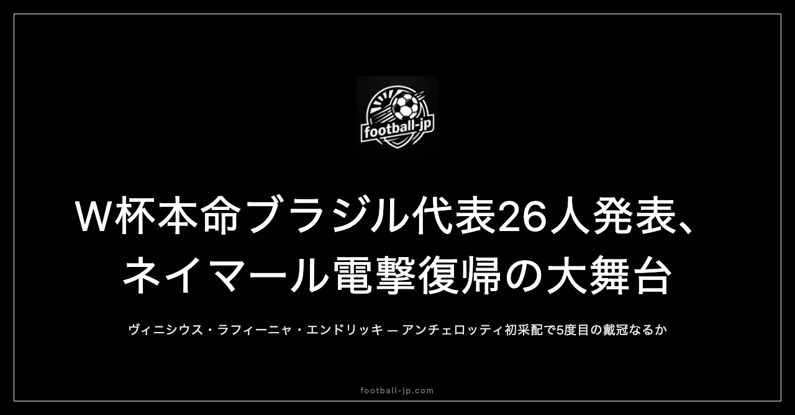

W杯本命ブラジル代表26人発表｜ネイマール電撃復帰でアンチェロッティ初采配
現地時間2026年5月18日、リオデジャネイロでアンチェロッティ監督がW杯2026に向けたブラジル代表26名を発表した。ヴィニシウス、ハフィーニャ、エンドリッキという前線に加え、約2年7ヶ月ぶりの代表復帰となるネイマール・ジュニアの名前も並んだ。電撃復帰と世代交代が同居するリストを読み解く。

リーグ別分布：プレミア勢8名という構成
26名の所属クラブ別リーグ分布は以下の通りだ。
| リーグ | 人数 |
|---|---|
| 🏴 イングランド（プレミアリーグ等） | 8名 |
| 🇧🇷 ブラジル国内 | 6名 |
| 🇮🇹 イタリア（セリエA） | 2名 |
| 🇪🇸 スペイン（ラ・リーガ） | 2名 |
| 🇫🇷 フランス（リーグ・アン） | 2名 |
| 🇸🇦 サウジアラビア（サウジ・プロリーグ） | 2名 |
| 🇷🇺 ロシア（ロシア・プレミアリーグ） | 2名 |
| 🇹🇷 トルコ（スュペル・リグ） | 1名 |
| フリーエージェント | 1名 |
イングランド組の8名が最多で、アリソン（リバプール）、カゼミーロ（マンチェスター・ユナイテッド）、ガブリエル・マガリャエス（アーセナル）、ブルーノ・ギマランイス（ニューカッスル）、ガブリエル・マルチネリ（アーセナル）、マテウス・クーニャ（マンチェスター・ユナイテッド）、イゴール・チアゴ（ブレントフォード）、ラヤン（ボーンマス）という顔ぶれだ。欧州最高峰のリーグで毎週戦い抜いてきた強度がそのまま代表に持ち込まれる。
年齢構成も幅広い。最年長はGKウェベルトン（38歳）、最年少クラスはエンドリッキ（大会中に19歳）とラヤン（19歳前後）。ネイマール34歳・カゼミーロのベテラン組と、次世代を担う若手が混在する構成はまさに新旧融合の26名だ。
GK 3人：アリソンを軸にした守護神層
GKはアリソン（リバプール🏴）が正GKとして揺るぎない地位にある。1992年生まれの33歳。リバプールで長年守護神を務め、足元の技術・ビッグセーブの精度・エリア内の統率力のすべてにおいて世界最高水準にある選手だ。2番手はエデルソン（フェネルバフチェ🇹🇷）、3番手のウェベルトン（グレミオ🇧🇷）は38歳で今大会の最年長選手だ。
DF 9人：マルキーニョス主将とチアゴ・シウバ落選
DFラインの中心はマルキーニョス（パリ・サンジェルマン🇫🇷）。1994年生まれの32歳、今大会での主将候補として名前が挙がっており、PSGで長年センターバックの柱として欧州の舞台を戦い続けてきた。
CB陣のもう一枚の柱はグレイソン・ブレメル（ユヴェントス🇮🇹）。セリエAの舞台で研ぎ澄まされた対人の強さとフィジカルは、グループCの対戦相手に対して圧倒的なアドバンテージになる。マルキーニョスとブレメルのCBコンビは現時点でブラジル代表が持つ最高の組み合わせだ。
注目の落選はチアゴ・シウバ（ポルト🇵🇹）。41歳の大ベテランで、予備リストには入っていたものの最終26名からは外れた。年齢と序列が決め手になった形で、ある意味で時代の変わり目を象徴する落選だ。
MF 5人：カゼミーロとブルーノ・ギマランイスの中盤
守備の軸はカゼミーロ（マンチェスター・ユナイテッド🏴）。レアル・マドリードでCL5連覇の中核を担い、ブラジル代表でも長年ボランチとして代表の守備ブロックを統括してきた選手だ。
ブルーノ・ギマランイス（ニューカッスル🏴）は現代型のボックス・トゥ・ボックス型ミッドフィールダー。ニューカッスルで主力に定着し、プレミアリーグの激しい中盤で培ったボール奪取力と推進力は代表の大きな武器になる。カゼミーロとブルーノ・ギマランイスのダブルボランチはブラジル中盤の理想的な組み合わせとも言える。
ダニーロ・サントス（ボタフォゴ🇧🇷）が新世代の象徴として選出。ブラジル国内で頭角を現した若い中盤で、この大会での経験が今後のキャリアを左右するだろう。
FW 9人：ヴィニ・ハフィーニャ・ネイマールの前線
前線の中心はヴィニシウス・ジュニオール（レアル・マドリード🇪🇸）とハフィーニャ（バルセロナ🇪🇸）の2枚。ヴィニシウスはレアル・マドリードで世界最高の左ウィンガーとして君臨し、ドリブルの爆発力とゴール前の嗅覚を兼ね備えている。ハフィーニャはバルセロナで攻撃のキーマンとして機能し、今シーズンも高い数字を残してきた。
そこにネイマール・ジュニア（サントス🇧🇷）が加わる。1992年2月生まれ、今大会の時点で34歳。サウジアラビア・アル・ヒラル時代に膝を負傷してから2年7ヶ月以上のブランク。その後サントスに復帰してコンディションを取り戻し、最終発表で代表に名前が載った。フィットネスの状態がどこまで戻っているかは未知数だが、ネイマールがピッチに立つだけで相手が警戒するレベルの選手であることは変わらない。
エンドリッキ（リヨン🇫🇷）は大会中に19歳を迎える若者。レアル・マドリード所属だが今シーズンはリヨンへのレンタルで経験を積んでいる。前線のダイナミズムをもたらす新世代として注目だ。
注目選手を深掘りする
ヴィニシウス・ジュニオール（レアル・マドリード🇪🇸）
25歳。世界最高峰のウィンガーという評価が定着した選手。スピードと技術の組み合わせは唯一無二で、1対1の局面では世界中のどの右サイドバックにとっても悪夢だ。ブラジルが優勝するかどうかの命運を、ある意味で彼が握っているとも言える。
ネイマール・ジュニア（サントス🇧🇷）
34歳、約2年7ヶ月ぶりの代表復帰。フィットネスと連携の仕上がりが最大のリスクだが、それを承知でアンチェロッティが選んだのは、彼がピッチ上で持つ特別な質——ドリブル突破・直接FK・創造性——が他の選手では代替できないと判断したからだろう。先発か途中出場かは未定だが、最初の試合でピッチに立つシーンは大きな話題を呼ぶはずだ。
ハフィーニャ（バルセロナ🇪🇸）
29歳。バルセロナで圧倒的なシーズンを送ってきた右ウィンガー。ゴール数・アシスト数ともに今シーズンは自己最高水準にあり、代表での役割もヴィニシウスとの2枚看板として明確だ。この構造を前にすれば、相手守備が正面から対処する選択肢はほとんどない。
優勝候補としての構造分析
ブラジルは今大会の優勝候補最上位グループに位置する。W杯5回優勝の最多優勝国が2006年以来20年間優勝から遠ざかっており、2022年カタールではクロアチアにPKで敗れてベスト8止まりだった。
グループCはブラジルに比較的有利な組み合わせだ。6月13日にニュージャージーでモロッコ、6月19日にフィラデルフィアでハイチ、6月24日にマイアミでスコットランドと対戦する。3試合を通過し、ベスト16からが実質的な本番という位置づけになる。
ネイマール復帰の意味については、フィットネスの仕上がり次第でチームへの貢献度が大きく変わる。アンチェロッティがどのタイミングでどのくらいの時間を使うかという判断が、大会を通じたブラジルの行方を左右する変数になる。